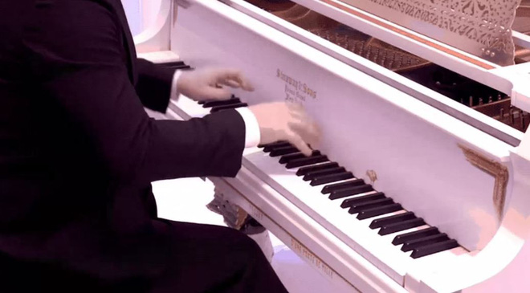

Piano (dương cầm) là một trong những nhạc cụ có tầm giá bán rất rộng, có những chiếc chỉ vài trăm USD, nhưng có những chiếc có giá tới hàng triệu USD. Nhưng liệu sự khác nhau đến từ đâu, và chất lượng âm thanh của những dòng piano cao cấp có xứng đáng với cái giá bằng cả một dinh thự hay không?
Để trả lời câu hỏi này, Youtuber và nghệ sĩ piano nổi tiếng Vinheteiro đã làm một bài thử nghiệm thú vị: so sánh chất lượng âm thanh của 6 chiếc đàn ở từng tầm giá khác nhau. Chiếc rẻ nhất của hãng Baldwin chỉ có giá là 500 USD, còn chiếc cao cấp nhất cũng có giá bán cao nhất trên Thế giới: lên tới 2.5 triệu USD.
Chiếc piano cao hơn chiếc Baldwin 1 bậc có giá là 2500 USD, và kể cả qua video Youtube ta cũng có thể nghe thấy được sự khác biệt một cách rõ rệt. Chiếc có giá 50.000 USD cũng là sự nâng cấp đủ nhận ra so với chiếc 2500 USD. Thế nhưng sự cách biệt ngày càng nhỏ khi đến với những lựa chọn giá 112 ngàn USD, 250 ngàn USD và cả chiếc đàn cao cấp nhất có giá bán 2.5 triệu USD. Theo như đánh giá của nhiều người, thì có lẽ chiếc đàn có giá 50.000 USD là lựa chọn hợp lý nhất, có chất lượng đủ tốt nhưng không làm người dùng phải 'bán nhà bán cửa' để đầu tư.
Còn bạn thì sao? Liệu bạn có thể nghe thấy được sự khác biệt giữa những chiếc đàn này. Có lẽ những người làm trong lĩnh vực âm thanh, hoặc trực tiếp chơi đàn piano sẽ thấy được sự khác biệt lớn hơn với những người khác.